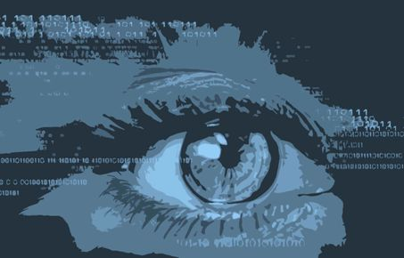

We map applications onto reconfigurable devices and other processors, build toolflows that automatically map algorithms to hardware, and design architectures for specific problem classes.

Machine Learning
We study how to make machine learning more efficient from training through deployment. Our work includes data-aware fine-tuning and pruning, multi-precision training, uncertainty-aware early exits, Bayesian inference, and toolflows that map CNNs—including 3D networks—onto FPGAs while balancing accuracy, latency and hardware resources.

Computer Vision
We build vision systems that can run under the compute and power limits of embedded devices. Projects span face super-resolution, human pose estimation and visual SLAM, combining image-processing algorithms with custom hardware and FPGA acceleration to meet real-time requirements.

Robotics & UAVs
We develop embedded perception and navigation for autonomous aerial robots. Our projects include self-supervised visual navigation, real-time object detection from UAV imagery, and camera-based ego-motion estimation, with hardware-aware designs aimed at reliable operation under tight onboard resource and latency constraints.
Explore our papers
Browse the full list of publications by research area.
Publications